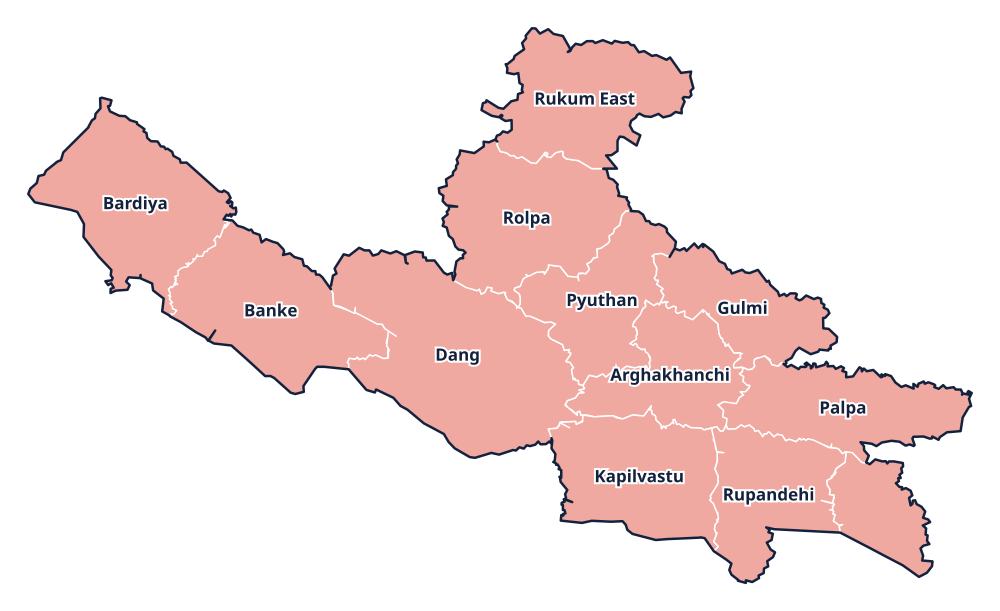

Province 5 · प्रदेश 5
Lumbini Province
लुम्बिनी प्रदेश

Provincial information
Capital: Deukhuri (देउखुरी)
Districts: 12
District directory
Select a district to view its profile, find news coverage, and browse local links.
Province 5 · प्रदेश 5
लुम्बिनी प्रदेश

Capital: Deukhuri (देउखुरी)
Districts: 12
Select a district to view its profile, find news coverage, and browse local links.